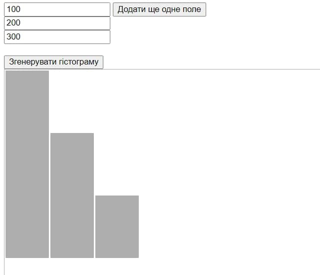
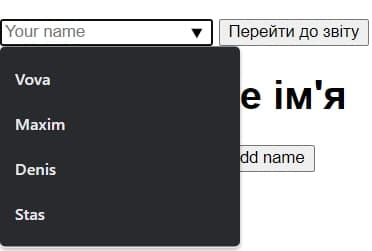

Забезпечити виконання завдання згідно варіантів 5, 7, 8, 9(Таблиця №2), сформувати необхідні дані, вбудовані у програму, у вигляді масивів, виконати тестування програми.
Варіант - 5. Реалізувати можливість перегляду зображень за таймером, врахувати можливість налаштування розміру зображень, циклічність перегляду, а також часу між переключеннями.
Варіант - 7. Реалізувати можливість уведення довільної кількості чисел у елементи форми та побудови нормалізованої за максимальним числом гістограми значень цих полів. При візуалізації гістограми використовувати лише засоби CSS.
Варіант - 8. Реалізувати програму-будильник. Основні функції: увімкнення-вимкнення, уведення дати та часу. Врахувати можливість включення довільної кількості будильників, а також перегляд «заведених будильників». При досягненні часу спрацьовування, заданого для будильника, видавати повідомлення.
Варіант - 9. Надати можливість виведення підказки при наборі тексту у елемент уведення «текстове поле». Передбачити можливість створення списку слів-підказок.
Варіант - 5
Варіант - 7

Варіант - 8
Варіант - 9

На нашому основну сайті у розділі "Картинки" перенесли завдання варіанту 5, тобто циклічне переглядання зображенрь за таймером.